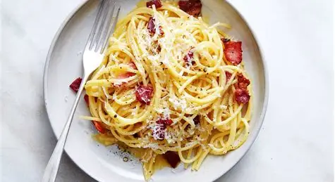
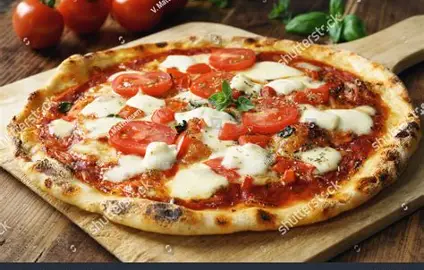

STEP-BY-STEP CULINARY GUIDES
Italian Recipes
Master the secrets of authentic Italian home cooking with traditional recipes passed down through generations.
EXPLORE MORE DISHES
Discover Recipes
Find recipes from around the world using TheMealDB.

Classic Spaghetti Carbonara
Ingredients
- 350g Spaghetti or Rigatoni
- 4 fresh Egg yolks + 1 whole Egg
- 100g Pecorino Romano cheese (finely grated)
- 150g Guanciale (cured pork cheek)
- Freshly cracked black pepper
Method
Cook spaghetti in salted boiling water until al dente. In a pan, crisp the guanciale over medium heat until golden.

Neapolitan Margherita Pizza
Ingredients
- 250g Fermented Pizza Dough
- 100g San Marzano crushed tomatoes
- 120g Fresh Fior di Latte Mozzarella
- Fresh Basil leaves
- Extra Virgin Olive Oil & Salt
Method
Stretch dough ball gently by hand onto a baking tray or pizza stone. Spread crushed tomatoes evenly.
Italian Culinary Gallery
Italian Cooking Golden Rules
1. Organic Ingredients
Italian cuisine relies on 3–4 peak-season ingredients. Always choose extra virgin olive oil, fresh herbs, and real DOP cheeses.
2. Simplicity Over Heavy Sauces
No heavy cream in Carbonara or ketchup on pizza. Let the natural flavors of ripe tomatoes, garlic, and basil shine.
3. Respecting Heritage
Traditional Italian recipes represent regional identity. Preserve classical techniques while cooking with passion.